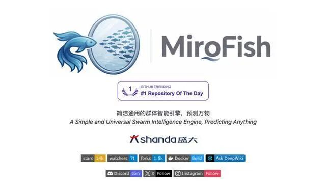
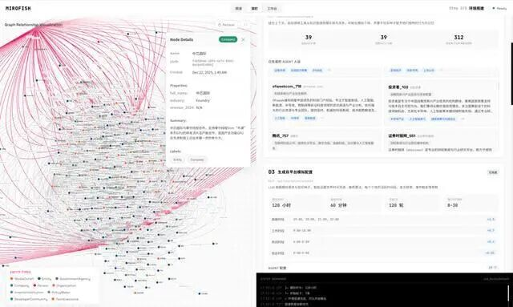
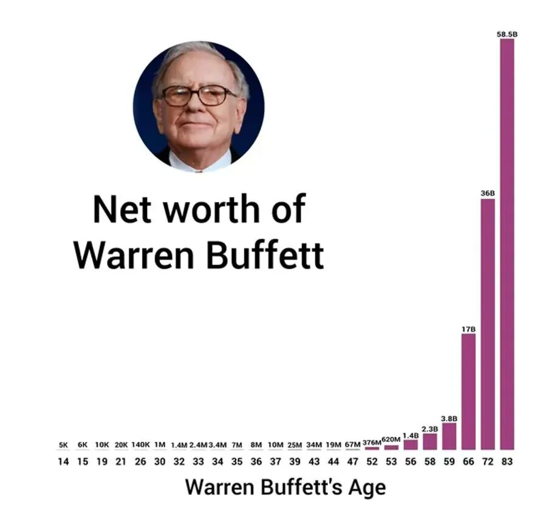
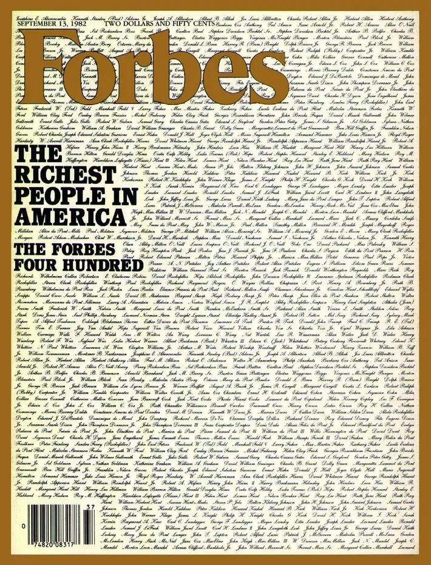
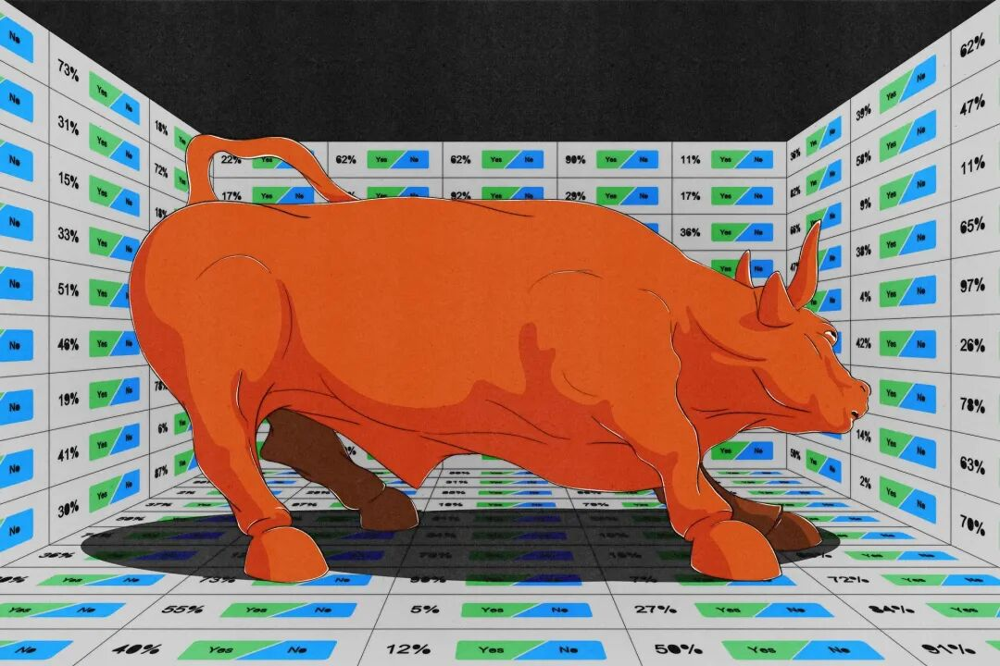
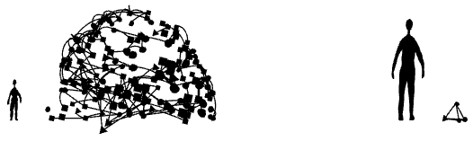

最近有一个故事，很适合拿来当这个时代的财富寓言。
一个 00 后，大四学生，北京邮电大学的郭航江，GitHub ID 叫 BaiFu。最开始，他做了一个项目，叫BettaFish，是一款多智能体舆情分析助手，也是他的毕业设计。
按照媒体报道，这个项目他借助Vibe Coding 的方式，只用了10 天 就做出来了。开源之后，BettaFish 很快在 GitHub 上爆火，短时间内热度飙升。
更夸张的是后续。
在 BettaFish 之后，郭航江又做了第二个项目 MiroFish。这也是一个只花了10 天 做出的开源项目。它被定义为“AI 预测引擎”——通过提取现实世界的种子信息，比如突发新闻、政策草案、金融信号，自动构建一个高保真的平行数字世界，在里面让大量具备人格、记忆和行为逻辑的智能体进行交互和演化，从而对未来走势做推演。
这个项目上线后，同样迅速登上 GitHub Trending 榜。
据媒体报道，郭航江在 BettaFish 爆火后，收到了大量大厂 offer、投资和合作邀约。后来，在他准备创业时，盛大方面给了他另一个选择：先提供一个足够大的舞台、足够长期的支持。他随后来到上海，再次用 10 天“手搓”出了 MiroFish。
然后，前中国首富——盛大集团创始人陈天桥注资 3000 万元人民币，支持 MiroFish的深度孵化。一夜之间，这个原本还在做毕业设计的大学生，从项目作者、实习生，转身成了 AI 创业公司 CEO。
这个故事里，最值得注意的当然不是“天才少年”四个字。
真正值得注意的是：它极端清晰地揭示了，这个时代财富生成的速度、方式和入口，已经和上一轮财富周期中的典范——巴菲特所处的时代完全不同了。
很多人还活在旧的财富想象里。他们依然相信，致富的主战场在二级市场；依然相信，只要持续读巴菲特、学价值投资、研究护城河、安全边际、能力圈，就有机会慢慢滚出一个大雪球；依然把“会投资”当成今天最重要的财富能力。
这些当然没有错的。
错的是，很多人还以为这仍然是这个时代最主要的财富入口。

一、巴菲特没有过时，但“复制巴菲特”早就过时了
首先要说的是，这不是一篇反巴菲特的文章。巴菲特的伟大毋庸置疑。
他不是靠运气，不是靠关系，不是靠继承，他从零开始，用一生的判断力，在公开市场里积累了令人窒息的财富，捐出三分之二之后仍是全球第六富有的人。
他写的股东信，是我读过的最好的商业教育材料。他对人性、对企业本质、对复利的理解，放在任何时代都有价值。
但这里有一个被严重忽视的事实：巴菲特是一个时代的产物，而那个时代已经结束了。
让我们回到1947年。
那一年，一个叫谢尔比·库洛姆·戴维斯（Shelby Cullom Davis）的前记者、前政客，从纽约州保险监管部门辞了职，带着五万美元，开始买保险股。他不是专业投资者，没有任何华尔街背景，投资生涯起步时已经三十八岁——在巴菲特眼里已经是"起步太晚"的年纪。
他最终把五万美元变成了九亿美元。
在同一时代，巴菲特也在做几乎一样的事。1951年，他写了一篇对GEICO的分析报告，指出这家公司用直销模式绕开代理商，成本比同行低一半，利润率高出四倍，而且保单持有人数量在过去五年翻了三倍；这样一家公司，市场只给了它八倍市盈率。
今天的标普500，预期市盈率是二十二倍。
那个时代能发生什么样的事，可以用一个细节来感受：1948年，本杰明·格雷厄姆的投资合伙公司，以七十一万二千五百美元买入了GEICO 50%的股权。这笔投资，到1972年已经产生了逾三亿美元的利润。回报倍数超过400倍。
为什么会有这种机会？
因为那时候，懂得给保险公司估值的人，少得可怜。1950年，美国只有8%的公开股票由机构投资者管理。证券分析还是一门刚刚被格雷厄姆发明出来的学科，他的书刚刚出版，绝大多数市场参与者既不会读资产负债表，也不知道什么是市盈率。
这就是巴菲特起步的世界。一个充满系统性定价错误的世界。一个有大量"十美分买走一美元资产"机会的世界。一个已经不存在并且不会再回来的世界。
二、“.400 级别”的投资者，再也不会出现了
美国作家 PHILO 写过一篇很有名的文章，题目叫《Where Are All The .400 Investors?》。“.400”借的是棒球术语。
在棒球运动里，.400意味着四成的安打率，是顶级打者的终极勋章。1941年，波士顿红袜的泰德·威廉斯（Ted Williams）打出了.406，是最后一次有人达到这个成绩。此后八十五年，没有人再跨越这道线。
那篇文章问了一个很扎心的问题：为什么今天几乎再也不会第二个巴菲特了？
因为如果长期来看，资本真的能创造丰厚回报；如果“资本收益率高于经济增长率”这件事是真的；那为什么美国最顶级的富豪里，很少有人是靠长期买入并持有上市公司股票，慢慢滚成超级富豪的？为什么榜单上更多的是创业者、科技公司创始人、早期股东，而不是“伟大的股票投资者”？
答案其实很简单：因为巴菲特面对的市场，和今天根本不是同一个市场。
巴菲特年轻时进入的是一个什么样的市场？
信息远不如今天透明；
机构投资者远没有今天多；
证券分析知识远没有今天普及；
优质公司被严重低估，并不罕见。
换句话说，那时候的公开市场，真有大量“掉在地上的钱”。只要你理解商业、看得懂报表、有耐心，又比平均水平更理性，你就能在公开市场里反复捡到大便宜。
但今天不一样了。
今天的信息传播速度更快了，职业投资者更多了，量化和算法更强了，套利者也更多了。市场当然还会犯错，但那种又厚、又久、又普遍的错误定价，已经少得多了。
PHILO 在那篇文章里借了一个特别好的比喻：为什么现代棒球里，再也没人打出 .400 了？不是因为后来的球员更差，而是因为所有人都变强了。
投手更强，守备更强，训练更科学，整个系统更成熟。于是，最顶级天才和平均优秀选手之间的差距，被压缩了。
投资也是一样。
1950年，机构投资者管理的公开股票占比是8%。到1970年代是20%。到2010年是67%。今天，全球有成千上万个专业基金经理，在人工智能的辅助下，对每一家上市公司进行24小时不间断的分析和定价。格雷厄姆1934年出版的书里讲的那些基本分析方法，今天已经被写进了每一个商学院的课程，被每一个CFA考试的候选人背得滚瓜烂熟。
这个市场，还会有像GEICO那样以两倍市盈率出售的优质企业吗？
不会了。
事实上，连巴菲特自己的数据都在说同一件事。他在伯克希尔时代（1965-1987年）的超额收益，是每年17.7个百分点。1988年之后到2020年，这个数字收窄到了4.8个百分点。
他没有变差。他可能比年轻时更好。是市场变了。那个允许任何人打出.400的宽阔空间，正在持续收窄。
今天你看不到那么多“传奇级投资者”，不是因为现代人不如巴菲特，而是因为你面对的是一个竞争强度高得多、效率高得多的市场。
你当然仍然可以成为一个优秀的投资者，但想靠二级市场复制巴菲特式的财富神话，难度已经不是一个量级。
巴菲特是投资界的泰德·威廉斯——同代最伟大的，也许是有史以来最好的，但他的传奇，本质上是在一个特殊的历史窗口里完成的。那个窗口，已经关上了。

三、财富的主战场，早就搬家了
再看硅谷创投教父保罗·格雷厄姆（Y Combinator联合创始人）在2021年写的一篇文章。他对比了1982年和2020年的《福布斯》美国前100大富豪榜单，发现了一件很有意思的事。
1982年，前100大富豪里，60个人的财富来自继承。光是杜邦家族的继承人就占了10个。其余的新财富，主要来源是两个领域：石油和房地产。100人里，靠创业起家的不算多，靠股票投资起家的，除了巴菲特，一个都没有。
2020年，继承人降到了27个。新财富里，有73笔，其中56笔来自创始人或早期员工的股权：52位是创始人，2位是早期员工，2位是创始人配偶。还有17笔来自管理投资基金。
从中我们会发现一个非常清晰的变化。
1982 年，美国最顶级的财富主要来自三样东西：继承、石油、房地产。
到了 2020 年，格局已经完全不同了。继承者占比明显下降，石油和房地产的重要性也大幅下降。取而代之的，是另一种财富来源：创办公司，尤其是技术驱动的公司；以及围绕这些公司形成的早期股权。
这不是一个小变化，而是一场财富生成机制的重组。
旧时代的财富故事，更多像这样：
有资源，有地段，有牌照，有关系，或者有能力在公开市场里发现长期低估的资产，然后靠资本和时间慢慢做大。
新时代的财富故事，越来越像这样：
一个人，或者一个很小的团队，借助技术杠杆，在极短时间内做出产品，迅速吸引用户和注意力，形成增长，然后在公司上市之前，就完成最陡峭的一段财富跃迁。
注意这里最关键的一点：
真正最厚的一层利润，往往在公司上市之前，就已经被创始人、联合创始人、早期员工和早期投资人分走了。
二级市场不是没有机会。它仍然是财富管理、资产配置、流动性兑现的重要场所。但它越来越像一个“成熟资产交易所”，而不再是“超级财富的主要诞生地”。
这也是为什么，今天你在股市里再怎么认真研究财报、估值、护城河，和那些在公司尚未上市之前就拿到核心股权的人相比，起点已经不一样了。
说得更直接一点：
过去最厉害的人，是在股票市场里发现价值；
今天最厉害的人，是在价值变成股票之前，就已经拥有了它。
这就是为什么郭航江那个故事，值得拿出来说道说道。
它不是一个简单的励志案例，而是一个时代样本。它说明今天最剧烈的财富生成，越来越不是“拿着本金去二级市场找便宜货”，而是“借助技术和产品，在极短时间内创造出一个足以吸引资本重新定价的东西”。
AI2028-AI2027-AI2026：巨变倒计时与普通人自救指南

四、为什么主战场会转移？这不是偶然
从1940年代到今天，到底发生了什么，让财富的主要来源从"捡便宜的股票"变成了"创办高速增长的公司"？
这个变化有三层原因，它们叠在一起，成为了一种强有力的趋势。
第一层：市场越来越有效，捡便宜越来越难。
这一点前面已经说了。机构化程度提高，信息流通加速，分析工具普及，公开市场的定价错误越来越少，留给聪明投资者的超额收益空间越来越窄。这是不可逆的趋势。
第二层：创业的成本，在历史性地下降。
这一层，才是今天故事的核心。格雷厄姆在他的文章里给了一组数据，令人印象深刻：
IBM从成立到做到10亿美元收入，用了45年。惠普用了25年。微软用了13年。前不久，高增长创业公司的平均数字，是7到8年。如今，AI公司的平均数据，看能只有三年左右。
为什么会这样？因为做产品变便宜了，触达客户变便宜了，扩张变快了。
以前创办一家公司意味着什么？建厂、雇大量人手、铺渠道、砸广告、等漫长的市场反馈。那个模式下，你必须先从投资人那里拿到大量资金，才有资格开始。1930年，GEICO创始人莱奥·古德温为了筹到七万五千美元的启动资金，被迫让出了公司75%的股权。
郭航江呢？他用AI辅助编程，10天完成一个产品原型，先把产品推出去，让市场反应来证明自己，然后再谈条件，让投资人追着他。
这不只是一个聪明年轻人的故事。这是一种结构性变化：创业的门槛被打穿了，创始人和投资人之间的权力关系，正在悄悄反转。
过去是创业者求资本；今天越来越多是资本追稀缺的创始人。这一反转，让创始人能在更早的阶段，以更好的条款保留更大的股权。1990年代，杰夫·贝佐斯经历了A轮融资和IPO，仍持有亚马逊51%的股权。这在旧时代，几乎不可能发生。
第三层：AI把这一切再加速了一遍。
郭航江案例的真正意义，不是"一个厉害的大学生"，而是AI让"个体创造力的资本化"变得前所未有地直接。
以前，一个有想法的人，需要一个团队、一笔资金、一段时间，才能把想法变成可以被市场验证的东西。这中间每一个环节，都在消耗时间、稀释股权、增加不确定性。
现在，AI把那些中间环节大幅压缩了。从想法到可演示的产品原型，需要的时间和资源越来越少。这意味着，一个人的判断力和想象力——而不是他能调动的资源——越来越直接地决定了他能创造多少价值。
郭航江的故事里，最有标志性的并不是“3000 万”这个数字本身，而是它背后的判断逻辑：在今天的资本视角里，一个能借助 AI 快速造出新物种的人，可能比许多传统意义上的成熟资产更值得下注。
这是财富逻辑上一次真正的地壳运动。
Nature重磅：图灵测试已死，AI已具备人类水平智能，这一天终于来了
五、财富史的更长视角：其实是又一次的轮回
还有一件事，很多人不知道。
1982年那份《福布斯》富豪榜，让很多人误以为"那个年代更平等、更朴实"，因为富人没有今天这么多，差距没有今天这么大。
但如果你往前再看一百年，画面完全不同。
1892年，《纽约先驱论坛报》编制过一份美国百万富翁名单，找到了4047人。那时候继承财富的比例，只有大约20%——比今天还低。而那些新财富的主要来源，历史学家Hugh Rockoff发现："最富有的那批人，很多人的最初优势都来自大规模生产的新技术。"
这听起来很耳熟，对不对？
真正的异常，不是2020年，而是1982年。
格雷厄姆在文章里解释了1982年为什么会那个样子：从19世纪末开始，JP摩根这样的金融家，把成千上万家小公司整合成了几百家巨型企业，形成了广泛的寡头格局。到二战结束，"经济的主要部门，不是被政府支持的卡特尔式结构，就是被少数几个寡头企业所主导"。
在那种结构里，创业根本就不是一条现实的路。你打不穿那些寡头，也触碰不到市场。所以最聪明、最有野心的人，不是自己创业，而是进入大公司，一步步往上爬。那个年代的财富，不可避免地集中在继承人、资源控制者和房地产玩家手里。
但这种结构从1970年代开始瓦解，部分因为大公司的自然老化，部分因为微电子技术从外部打穿了旧有格局。创业公司开始能从"冰层正中"破出来，取代原有的零售商、媒体、汽车制造商。
所以，2020年大量创业者变成富豪，这不是新现象，是历史的又一次轮回。1982年那个"靠股票赚大钱"的短暂窗口——相当于我国的上一个周期，才是历史上真正的例外。
六、今天我们还要不要学巴菲特？
要学。
但要学的，不是“如何复制他的财富路径”，而是“如何理解他的底层能力”。
巴菲特真正值得学的，从来都不是几条选股口诀，更不是“低买高卖”这种废话，而是几种更深层的东西。
第一，理解商业本质。
他买的从来不是股票代码，而是企业的现金流、竞争优势和管理层。
第二，尊重复利。
不是嘴上讲长期主义，而是真能在正确的东西上长期持有，并忍受过程中的波动、无聊和怀疑。
第三，知道边界。
知道什么不懂，什么不碰，什么机会虽然热闹但不属于自己。
第四，等真正的大机会。
巴菲特不是天天交易的人，他是在少数高赔率时刻，敢于重仓。
这些东西今天仍然极其重要。只是，它们的应用场景不该只局限在二级市场。
价值投资依然是非常优秀的资产管理方法。它能帮你少犯错、减少不必要的交易、在市场恐慌时保持理性、长期维持稳健的复利增长。如果你已经积累了一笔资产，价值投资是保护和增值这笔资产的极好工具。
但它有一个无法回避的前提：你得先有那笔资产。
复利是世界第八大奇迹，但它有一个冷酷的数学事实：复利的结果，对初始本金极度敏感。十万块钱，年化15%，三十年后是六百六十万。一千万块钱，年化15%，三十年后是六点六亿。
对大多数普通人来说，在本金足够大之前，时间不是你的朋友，是你的成本。
更直接地说：价值投资是守富的工具，不是致富的引擎。
真正应该向巴菲特学习的，不是他怎么选股，而是他怎么判断时代给了什么结构性机会。
1947年，他的老师格雷厄姆以七十一万美元买入GEICO 50%的股权——当时GEICO的市盈率不到两倍。今天回头看，那不是"捡了一只被低估的股票"，那是踩中了一个整个市场都还没意识到其价值的资产类别。
放到今天，这种思维方式会指向哪里？
所以真正的问题不是“还学不学巴菲特”，而是你在什么样的认知格局中学习巴菲特。

七、普通人今天真正该调整的，不是仓位，而是人生策略
说到这里，很多人会问：那普通人怎么办？总不能人人创业吧？
当然不能。这篇文章也不是鼓吹“全民创业”，更不是说二级市场没价值。真正要调整的，是你的财富优先级排序。
这个时代当然仍然需要投资能力。资产配置、风险管理、长期持有的心理素质，这些东西永远有价值。
但如果你关心的问题是"如何在这个时代真正积累财富"，那你需要先回答一个更根本的问题：财富首先从哪里来？
答案越来越清晰地指向：在价值被公开定价之前，拥有它。
这可以有多种形态。最极端的是创办一家公司，从0到1。对绝大多数人来说，这不现实，也不必要。但这个逻辑的延伸是：
你是否在一个有高速增长潜力的组织里，以某种形式拥有股权或等价利益？
你是早期员工，有期权？你是核心合伙人，有分成？你是那种让一家成长中的公司愿意用股权来绑定你的人？
这些问题，比"买哪只股票"更根本，也更难回答。
还有一个角度，是很多人没有考虑过的：
买股票，是用现金换股权；更高阶的，是让公司用股权来换你的能力。正如郭航江。
前者你是资本的提供者，后者你是价值的创造者。在一个资本越来越充裕、但真正的创造力越来越稀缺的世界里，哪个身份更值钱，不需要太多解释。
如果你还年轻，或者还在职业上升期，那么比“买哪只股票”更重要的问题，可能是：你有没有机会进入一家高速成长的组织，并在其中拿到足够接近核心价值创造的位置。
这就是为什么，很多时代里的真正赢家，往往不是一开始最有钱的人，而是最早进入增长系统、并在系统中拿到位置的人。
价值投资仍然非常重要。它能让你少走弯路，避免在周期里被情绪吞掉，避免高买低卖，帮你更稳地管理资产。
但它更像“守城术”，不是“攻城锤”。
它更适合你在已经拥有一定资产、现金流或者股权成果之后，帮助你长期保存和放大成果；而不是幻想仅靠研究公开市场，就完成从普通人到顶级富人的阶层穿越。
真正残酷也真正清醒的结论
我们这一代人最大的认知错位，可能就在这里：
一边，我们生活在一个技术、产品、AI、创业、网络效应疯狂重塑财富结构的时代；
另一边，我们的财富想象却还停留在“读股东信、找好公司、慢慢滚雪球”的旧范式里。
这就像一场战争，主力部队早就转移了阵地，而你还在旧战壕里认真磨枪。
当然，旧战壕不是没用。它仍然能保护你，仍然能让你比很多人做得更稳、更长久。
但如果你关心的是“这个时代的财富究竟从哪里来”，那你必须承认：
致富的主战场，已经从公开市场的价值发现，转向了技术驱动的价值创造；
从买入成熟资产，转向了更早地参与增长；
从研究股票，转向了争夺股权；
从管理财富，转向了先成为财富的源头。
所以，别再把“学巴菲特”当成今天最重要的致富答案了。
巴菲特教你的，是如何在财富已经存在时，理解它、配置它、放大它。
而今天更迫切的问题是：财富首先从哪里来。
郭航江那个“10 天做出项目、连续两个开源产品登上 GitHub Trending、最终拿到盛大 3000 万投资”的故事，也许不是每个人都能复制；但它至少说明了一件事：这个时代最剧烈的财富跃迁，越来越发生在“股票代码出现之前”。
这并不意味着二级市场没价值。
它意味着，你不能再把二级市场误认为全部价值发生的地方。
真正该更新的，不是你的持仓，而是你的地图。
因为这个时代当然还奖励会投资的人，
但它更慷慨地奖励那些在股票出现之前，就已经站进股权里的人。【懂】
欢迎加入经叔的知识星球。在这里，我们拒绝无用的焦虑，只谈底层的逻辑与实战的干货。我会结合最新的AI前沿动态、深度的商业创新分析（如一人企业的构建）和独特的文化思潮（如麦克卢汉的媒介洞察），帮助大家把握时间窗口。
